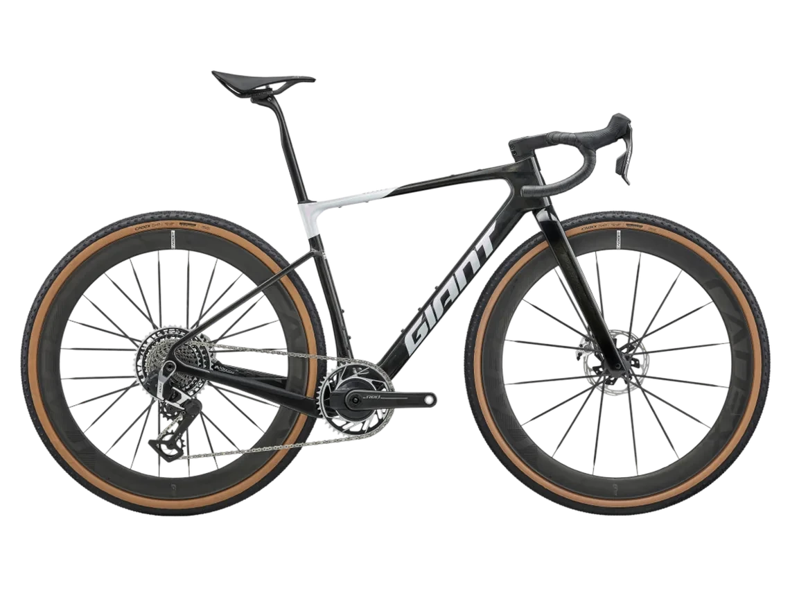

山路
起伏與彎道交替，關注爬坡時的齒比選擇，以及下坡時的煞車控制。
NT$ 308,000

你選擇了山路與碎石小路。選車重點是爬坡齒比、下坡煞車，以及碎石路面的抓地與震動回饋。
Revolt 的寬範圍齒比、液壓碟煞與寬胎配置，可兼顧山路起伏與碎石路面。
起伏與彎道交替，關注爬坡時的齒比選擇，以及下坡時的煞車控制。
路面較鬆散，關注輪胎抓地、震動吸收與操控穩定。
從爬坡、操控、舒適、路面適應與效率，對照這次選擇的路況。
| 騎乘需求 | 車款配置 | 配置解讀 |
|---|---|---|
| 山路爬坡 | SRAM RED XPLR AXS 1 × 13 / 10–46T | 寬範圍飛輪提供不同齒比，方便依坡度調整踩踏節奏。 |
| 下坡控制 | 液壓碟煞 前後 160mm 碟盤 | 可細緻調節煞車力道；實際煞停仍受路面、速度與操作影響。 |
| 碎石抓地 | 700 × 45c 外胎 最大胎寬 53mm | 寬胎為碎石路面提供接地與胎壓調整空間。更換輪胎前需確認間隙。 |
| 震動回饋 | Contact SLR XR D-Fuse 碳纖維座桿 | 減少細碎震動回饋；舒適度也會受胎壓與騎姿影響。 |
Revolt 是 Gravel 車款。遇到大落差、岩石或技術林道，應另評估登山車；到門市確認尺寸與騎姿後，再決定配置。
選好門市與時段，到現場確認車架尺寸與騎姿。
同一段山路與碎石小路，換一台車再跑一次，差別會比看規格表清楚。
山路與碎石小路，可以先準備補水與收納。已有的裝備就不必重複買。